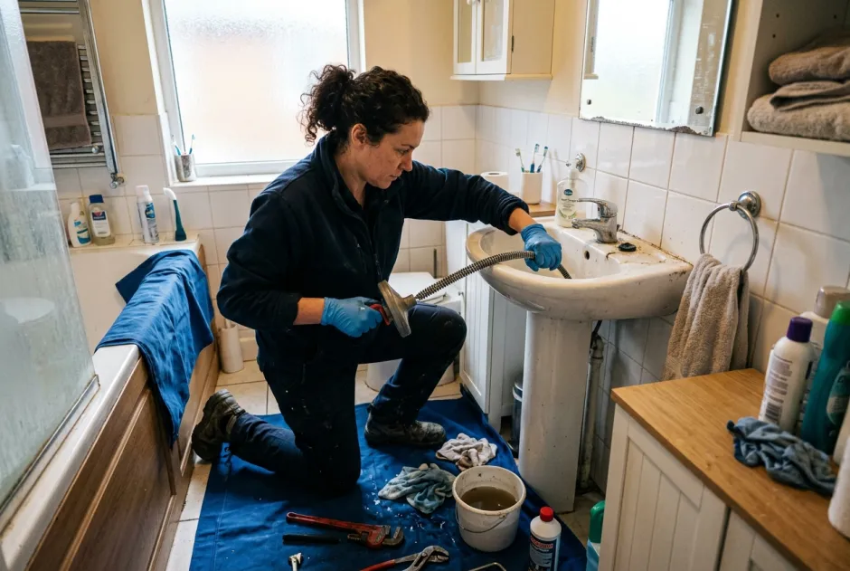

Emergency Drain Cleaning Naples, FL
Sudden sewer backups, gurgling toilets, and wastewater pooling in ground-floor showers require immediate intervention to prevent severe interior structural damage. When plumbing lines fail unexpectedly across Southwest Florida, our experienced technicians dispatch equipped with high-torque motorized root cutters, sewer scoping cameras, and trailer jetting units. We identify the source of the stoppage before quoting, explain the exact solution, and confirm pricing before work begins. For rapid response throughout Collier County, explore our central drain cleaning in Naples, FL services.
Clear arrival timeUpfront firm quotesCamera
inspected first
What Qualifies as a Drain Emergency in Naples?
A slow sink or dripping faucet can wait for regular business hours, but sewer backups that flood living spaces or halt commercial kitchen operations require rapid professional clearing.
In coastal Collier County, high water tables, heavy seasonal storms, and rapid tree root expansion mean that drainage lines under stress can block completely without warning. If wastewater emerges from your shower drain when flushing a nearby toilet, or multiple fixtures bubble simultaneously across your ground floor, your main sewer lateral is completely obstructed.
Attempting to force chemical solvents down a backed-up fixture creates standing pools of caustic liquid that endanger your household and damage older cast iron piping. Our specialized team arrives with drop cloths, sanitary shoe covers, and heavy-duty cabling machinery designed to safely penetrate obstructions and relieve line head pressure immediately.

Camera Verification: We visually inspect underground lines
to verify whether the emergency was caused by foreign debris, grease, or severe structural root ingress.
Immediate Steps While Waiting for Dispatch
Take these critical actions immediately to minimize water damage and protect your home.
Shut Down Water Use
Turn off running faucets, pause laundry washing machines, and stop dishwasher rinse cycles. Any water entering the drainage system will overflow at the lowest fixture.
Avoid Liquid Chemical Cleaners
Never pour store-bought caustic chemicals into standing wastewater. They cannot penetrate a solid main obstruction and create chemical burn hazards for technicians cabling the pipe.
Isolate Contaminated Rooms
Keep children and family pets out of affected bathrooms or laundry rooms. Place rolled dry towels along door thresholds to prevent wastewater from seeping into adjacent carpeted areas.
Check Exterior Cleanouts
If you have an exterior ground cleanout cap in your yard or flowerbed, locate it. Relieving pressure outside the home often prevents interior toilet and tub overflowing.
Our Emergency Service Process
From the moment you call dispatch to the final sanitary cleanup, here is how our team restores your plumbing.
Rapid Call Intake & Dispatch
You speak directly with our local scheduling coordinator. We assess symptoms, verify your street address, and provide an honest arrival window based on current route availability.
Protective Site Setup & Inspection
We arrive with floor protectors and inspect cleanout access points. When accessible, an optic push camera identifies whether the stoppage is localized or located deep within the lateral.
Firm Upfront Quote
You hear the exact flat-rate price before any tool is fed into the line. We explain the recommended method—mechanical cabling or hydro jetting—and you authorize the work.
Clearing & Heavy Obstruction Removal
We feed commercial-grade augers or hydro jetting nozzles through cleanouts to break apart tree roots, compacted grease, or foreign items, safely restoring gravity flow.
Flow Verification & Sanitary Cleanup
We flush full water volumes through all affected fixtures, test proper drainage velocity, sanitize the immediate work zone, and leave your property clean.
What Causes Emergency Drain Backups in Naples?
Southwest Florida coastal geography creates distinct drainage vulnerabilities.
Aggressive Tree Root Infiltration
Tropical ficus, royal palms, and live oaks send hairline root feeders into underground pipe joints searching for water during dry winter periods, expanding rapidly into impenetrable nets.
Accumulated Cooking Grease & Fats
In residential kitchens and vacation rental condos, warm grease solidifies against cold underground pipe walls, trapping food particles and forming rock-hard blockages.
Gulf Beach Sand Intrusion
Properties near Vanderbilt Beach, Port Royal, and Old Naples frequently accumulate heavy beach sand washed into exterior drains and bathroom showers, settling heavily in flat pipe runs.
Aging Cast Iron Pipe Deterioration
Many classic homes built before 1975 have original cast iron sewer laterals that suffer internal rust scale and channel rot, catching toilet paper and creating repeated emergency overflows.
Emergency Services for Homes, Condos & Businesses
Different building architectures require specialized drainage remediation.
Single-Family Homes & Estates
From single-fixture stoppages to lateral sewer backups impacting multiple bathrooms, we protect residential floorings and restore normal living conditions quickly.
Multi-Story Condominium Stacks
Shared vertical drainage stacks in coastal high-rises along Pelican Bay and Gulf Shore Boulevard require coordinated cabling to prevent multi-unit overflow damage.
Restaurants & Commercial Plazas
Commercial kitchens facing grease trap blockages or floor drain overflows near 5th Avenue South and The Mercato receive high-priority mechanical clearing to prevent health code closures.
Typical Emergency Drain Cleaning Costs in Naples
Understand how emergency rates are structured across Collier County.
Single Fixture Snaking
Typical market rates for clearing isolated fixture clogs (sinks, tubs, toilets) generally range from approx. $100 to $270.
Main Sewer Cleanout Line
Clearing a primary building lateral via accessible ground cleanouts typically ranges from approx. $180 to $400 depending on distance.
Extensive Root Cutting or Jetting
Severe root masses or heavy grease scouring with hydro jetting typically range from $264 to $380, reaching up to approx. $651 for complex runs.
Mandatory Pricing Disclaimer: Estimates reflect typical Naples, FL market ranges for standard residential access. Final price confirmed on-site before work begins. We do not charge hidden trip fees. For our full transparent price breakdown across Southwest Florida, visit our dedicated Naples drain cleaning cost guide.
What should I do immediately during a sudden drain backup in Naples?
Stop running all water in the house immediately, including dishwashers and washing machines. Do not use chemical liquid drain openers, as caustic chemicals can splash back during mechanical cabling. Keep family and pets away from contaminated wastewater and call our dispatch desk at (239) 688-0557.
How quickly can a drain technician arrive at my Naples property?
When you call, our dispatch coordinator checks live technician routes across Collier County and gives you an honest arrival window for the next open technician. We explain immediate mitigation steps while the truck is en route.
How do I know if the sewage backup is my responsibility or Collier County's?
If wastewater backs up across all ground-floor fixtures simultaneously, the issue is on the main lateral or municipal line. On Collier County sewer, call Collier County Wastewater at (239) 252-2600. Within municipal Naples city limits, call City of Naples Utilities at (239) 213-4745. If the municipal main is clear, the blockage is within your private property lateral.
How much does emergency drain cleaning cost in Naples?
Typical Naples market rates for clearing urgent fixture stoppages range from approx. $100 to $270, while main line sewer cleanouts typically range from $180 to $400 depending on access points. We provide a firm quote before any work starts.

Need Urgent Drain Clearing in Naples?
Tell us your street in Naples or Collier County. Our dispatch coordinator will confirm the next open arrival window and quote the job upfront.
Contact Naples Drain Pros Dispatch
Call our central scheduling line for prompt emergency and scheduled drain care across Southwest Florida.